Introduccion
El set de daatos contiene información de clientes provenientes de distintas campañas o procesos de consulta inmobiliaria.
Cuenta con 24 variables y 2,076 observaciones, antes usadas para expediciones, ahora reinterpretadas como registros de clientes.
Algunas variables refieren a características del cliente (edad, género, nacionalidad, perfil), otras al proceso de consulta o decisión de compra (referidos, trimestre de búsqueda), y algunas a atributos del inmueble consultado, que deberán filtrarse o transformarse para el análisis. Luego cada campaña representa una iniciativa de ventas concreta donde se agrupan varios clientes.
La variable de interés es la compra o no del inmueble (renombrada a compra), es decir, queremos predecir un evento binario (1 = compra, 0 = no compra).
Por ello utilizaremos un modelo logístico, apropiado para modelar la probabilidad de ocurrencia de un suceso dicotómico.
Una compra exitosa se define cuando el cliente concreta la adquisición del inmueble consultado. En los datos originales esto se representaba con una igualdad de alturas; en el nuevo enfoque, equivale al momento en que el cliente pasa de la consulta a la transacción efectiva.
Tabla Descriptiva de las variables
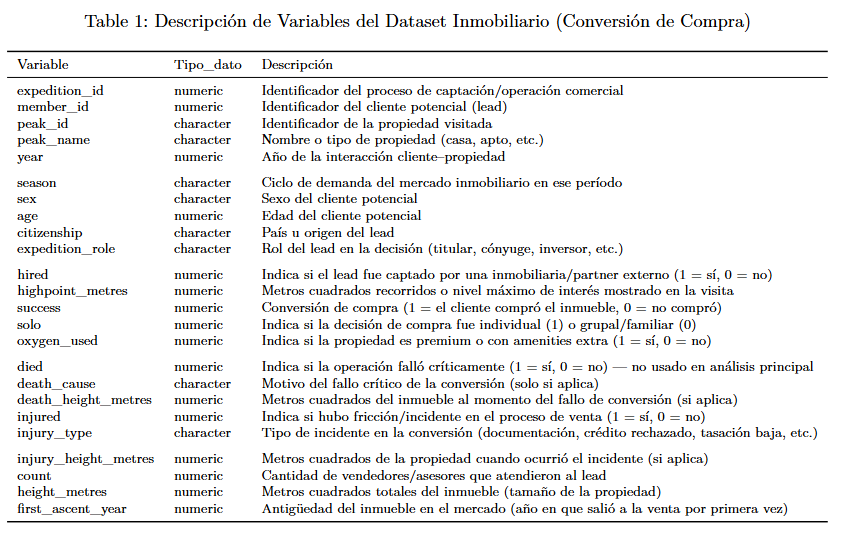
Si queremos una tabla con medidas descriptivas de las variables, usamos
Estadisticos como el minimo, el primer cuartil, la mediana, la media, el tercer cuartil y el maximo para variables cuantitativas
La cantidad de TRUES y Totales con su porcentaje asociado haciendo el cociente entre TRUES y el Total para variable categoricas binarias
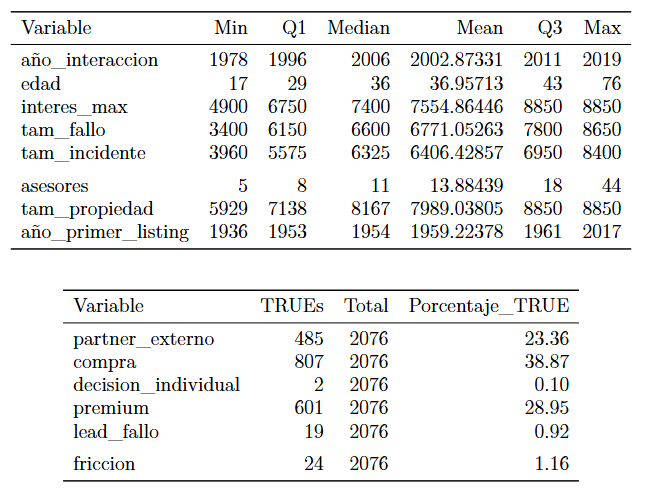
Análisis Descriptivo: Cartera de Activos Inmobiliarios y Perfil de Leads
Tenemos con un portafolio de activos inmobiliarios diferenciados (propiedad). Estas propiedades tienen una gran variabilidad en su tamaño o valor base (tam_propiedad), lo cual influye directamente en el interés máximo mostrado por el cliente (interes_max) durante el proceso de negociación.
La edad de los clientes potenciales muestra un rango amplio; sin embargo, el grueso de los interesados se concentra en un segmento de madurez financiera, con edades comprendidas principalmente entre los 29 y 43 años.
El análisis abarca un historial de interacciones comerciales (año_interaccion) desde 1978 hasta 2019, con un punto medio de actividad en el año 2002. Además, el modelo considera la trayectoria del activo en el mercado, usando el año de su primer listado o salida a la venta (año_primer_listing) como referencia de antigüedad.
Los datos muestran que 807 leads concretaron la operación de compra de un total de 2,076 interesados. Esto representa una tasa de conversión del 39%, lo que sirve para medir la eficacia del equipo de ventas.
Se observa que 507 de los 2,076 clientes optaron por servicios o características de alta gama. Veremos mas adelante si existe una correlación positiva entre la contratación de servicios premium y la probabilidad de cierre de la venta.
Las métricas relacionadas con la pérdida definitiva del cliente o incidentes graves durante la negociación presentan una frecuencia extremadamente baja (pocos valores TRUE). Debido a esta escasez de datos, las variables dependientes (como el motivo exacto de la pérdida o el punto del embudo donde ocurrió el incidente) presentan demasiados valores nulos (NA). Por lo tanto, se ha decidido excluir estas variables específicas del modelo predictivo para evitar ruidos estadísticos.
La variable que identifica si el cliente tomó la decisión de compra de forma totalmente independiente, sin asesores externos, solo cuenta con dos registros positivos. Dada su nula representatividad estadística, esta variable también ha sido descartada del análisis.
Para tener un dataframe más limpio y eficiente para el modelado predictivo, se eliminaron variables que no aportan valor estadístico o que presentan redundancia informativa. Las variables descartadas son:
- propiedad_id: Se eliminó para evitar la duplicidad de información, ya que el análisis se centrará en el nombre descriptivo del activo (propiedad), el cual ya funciona como identificador único para nuestros fines.
- decision_individual: Descartada debido a su nula variabilidad (solo dos registros positivos), lo que impide que el modelo aprenda patrones significativos sobre las compras sin asesores.
- Variables de Fricción Detallada (motivo_fallo, tam_fallo, tipo_incidente, tam_incidente): Estos campos, que describían la naturaleza exacta de una pérdida de cliente o un problema en la negociación, fueron descartados por la alta frecuencia de valores nulos (NA), derivada de la baja tasa de incidentes críticos en la muestra.
Tras este proceso de limpieza, el nuevo conjunto de datos queda conformado por 18 variables clave, optimizadas para identificar los factores que realmente impulsan la conversión inmobiliaria.
Correlaciones entre variables numéricas:
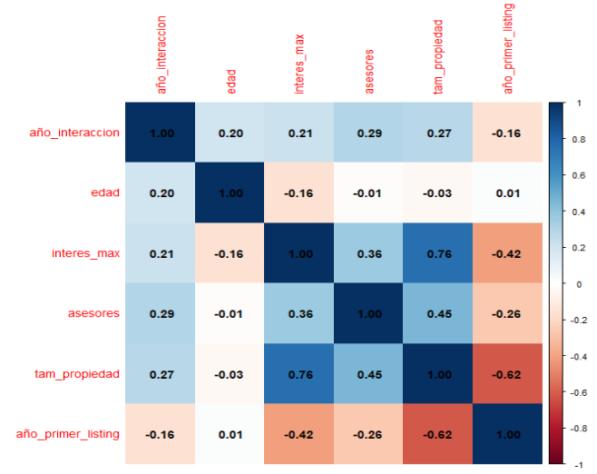
Matriz de correlación entre los predictores cuantitativos usados para explicar a la variable de interés "compra"
El Coeficiente de correlación entre pares de variables cuantitativas. Varia entre 1 y -1, y toma distintos colores donde:
- Azul oscuro: correlación positiva elevada. A medida que un predictor aumenta, también lo hace el otro.
- Rojo: correlación negativa. A medida que un predictor aumenta, el otro disminuye.
- Blanco: no existe correlación.
Al analizar las relaciones entre las variables cuantitativas de nuestro portafolio inmobiliario, se observan los siguientes hallazgos estratégicos:
tam_propiedad y interes_max (Correlación: 0.76): Existe una fuerte relación lineal positiva entre el tamaño o valor del activo y el nivel de interés alcanzado por el lead. Es razonable concluir que las propiedades de mayor envergadura o prestigio tienden a traccionar negociaciones que llegan a etapas más avanzadas o "altas" del embudo de ventas.
tam_propiedad y asesores (Correlación: 0.45): El número de asesores involucrados en la interacción comercial muestra una correlación moderada con el tamaño de la propiedad. Los activos más grandes o complejos suelen demandar equipos de asesoramiento más robustos o expediciones comerciales de mayor escala.
interes_max y asesores (Correlación: 0.36): Se observa que cuando el proceso de venta alcanza sus puntos más altos de interés, suele haber una mayor presencia de asesores. Esto sugiere que las negociaciones exitosas en propiedades de lujo requieren un acompañamiento técnico más intensivo.
Nueva Variable: antiguedad_años
Se detectó que el año del primer listado (año_primer_listing) guarda una estrecha relación con el tamaño de la propiedad y el interés alcanzado. Resulta lógico pensar que, con el paso de las décadas, el mercado ha evolucionado para gestionar propiedades más complejas y alcanzar niveles de negociación más ambiciosos, para verificar esto creamos una nueva variable definida como:
antiguedad_años = año_interaccion - año_primer_listing
Esta variable calcula cuántos años han pasado desde que la propiedad entró por primera vez al mercado hasta la interacción actual. Esto nos permitirá evaluar si los activos con mayor trayectoria en el mercado inmobiliario presentan un comportamiento de cierre de ventas distinto a los listados más recientes.
Realizamos un grafico de esta nueva variable en relacion a la variable de interes "compra"
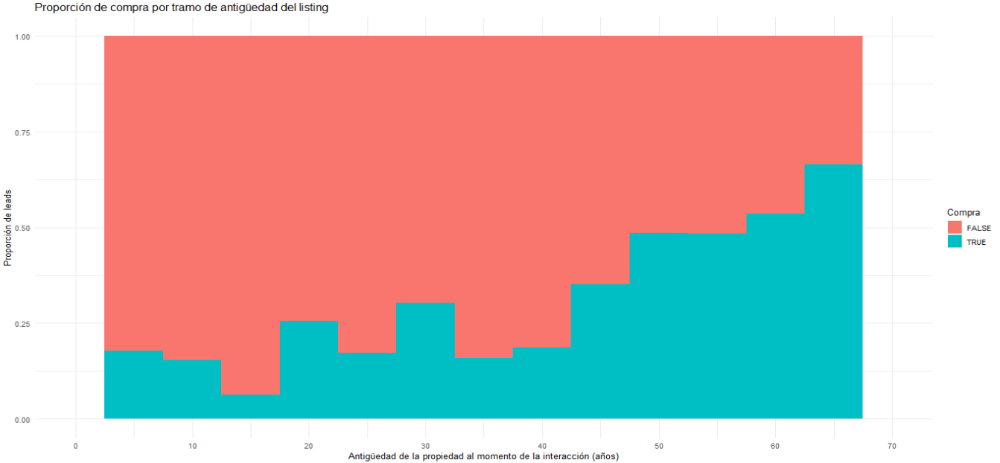
Nuestra nueva variable, antiguedad_años, tiene una tendencia, los datos sugieren que existe una correlación positiva entre el tiempo que una propiedad lleva posicionada en el mercado (desde su primer listado) y la probabilidad de éxito en la venta.
A medida que el activo acumula años de trayectoria comercial, la tasa de cierre tiende a incrementarse. Esto podría explicarse por una mayor consolidación del valor del inmueble en el imaginario del mercado o por un ajuste más preciso entre la oferta y el perfil del cliente interesado a lo largo del tiempo.
Analisis Exploratorio de Datos
Si queremos ver las distribuciones de distintas variables
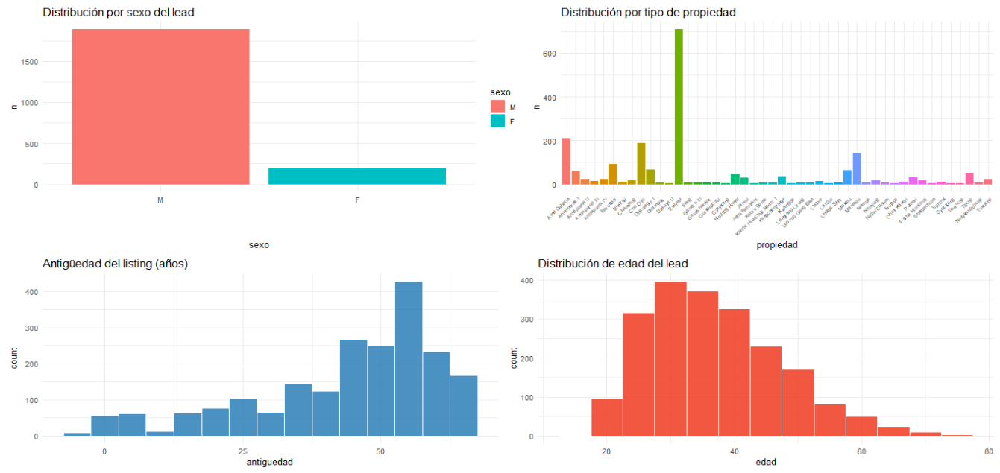
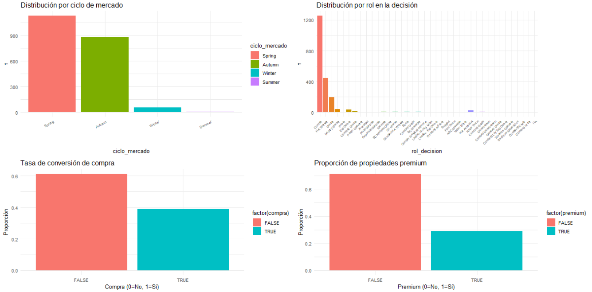
Tras analizar la distribución de las variables principales, se identifican los siguientes patrones de mercado:
Si bien el portafolio cuenta con una amplia variedad de inmuebles, la gran mayoría de las interacciones y campañas se concentraron en la propiedad principal.
El volumen de actividad comercial muestra un crecimiento exponencial reciente, concentrándose la mayor parte de las interacciones de los años 2000 en adelante.
Existe una marcada predominancia de hombres en la base de datos de interesados, y el segmento de edad con mayor densidad se sitúa entre los 20 y 40 años, lo que define a un lead joven pero con capacidad de decisión.
La actividad comercial es altamente estacional. La mayor parte de las negociaciones se inician en primavera u otoño, mientras que los ciclos de invierno y verano muestran un volumen de operaciones significativamente menor.
En cuanto al rol de los participantes en la negociación (rol_decision), el perfil más frecuente es, con diferencia, el de "Cliente/Interesado", seguido por el personal de "Soporte Técnico/Asesores de Campo" y, finalmente, los "Líderes de Proyecto" o gerentes de cuenta.
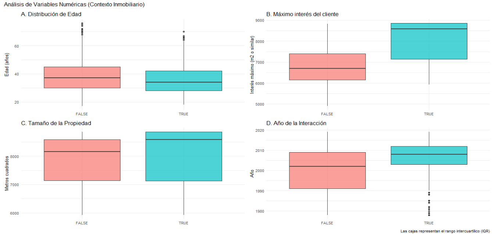
Análisis Comparativo mediante Diagramas de Caja (Boxplots)
Al agrupar la distribución de las variables clave según el resultado final de la operación (Compra: Éxito vs. Fracaso), observamos los siguientes comportamientos:
La edad del cliente no representa una diferencia sustancial en el desenlace de la operación. Tanto los cierres exitosos como las ventas fallidas muestran distribuciones de edad muy similares, lo que sugiere que este factor demográfico no es un predictor determinante por sí solo.
El tamaño de la propiedad (tam_propiedad) por sí solo no muestra una diferencia drástica entre éxito y fracaso. Sin embargo, el interés máximo alcanzado (interes_max) sí es un diferenciador crítico.
Consideramos que la envergadura del activo puede ser un dato "engañoso" debido a la gran concentración de operaciones en nuestra "propiedad estrella" (el equivalente al Everest). Por ello, hemos decidido excluir el tamaño de la propiedad como variable predictora, priorizando variables que reflejen mejor la dinámica de la negociación.
El año de interacción muestra una diferencia clara entre los casos de éxito y fracaso. Existe una tendencia donde las operaciones más recientes muestran patrones de cierre distintos, lo que refleja una evolución en las tácticas de venta o en las condiciones del mercado inmobiliario actual.
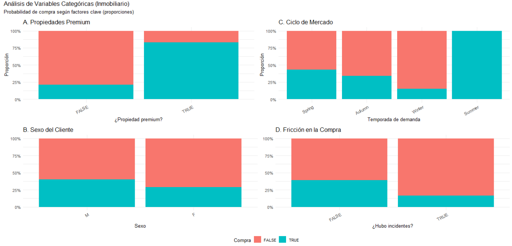
Análisis de Proporciones Categóricas y Conversión
Al analizar cómo influyen las variables cualitativas en la tasa de cierre de ventas, se han tomado las siguientes determinaciones para el modelo predictivo:
Es evidente que el uso de servicios adicionales de alta gama (como asesoría personalizada o tecnología avanzada) afecta positivamente la proporción de éxitos. Debido a este fuerte contraste, la variable premium será utilizada como un predictor fundamental en nuestro modelo.
Si bien se observa una ligera diferencia en la proporción de éxito entre hombres y mujeres, se ha decidido descartar el sexo como variable predictora. Esta decisión se basa en la gran disparidad en el volumen de datos (la cantidad de leads masculinos es significativamente superior), lo que podría inducir a conclusiones sesgadas o poco representativas.
Se identifican variaciones considerables según la temporada del año. Es importante notar que, aunque la tasa de éxito en el ciclo de verano aparece como el 100%, este dato debe tomarse con cautela debido al bajo volumen de observaciones en esa época. No obstante, las diferencias entre primavera y otoño son lo suficientemente sólidas como para ser consideradas en el análisis.
Definición de los modelos
Usaremos un modelo logístico, esto debido a que la variable de interes "Compra" se puede pensar como un Éxito en caso de que se de la compra del inmueble o Fracaso en caso de que no se de la compra del inmueble
Utilizamos variables Bernoullis, con probabilidad \( \pi \) de éxito. La variable de respuesta Y distribuye: \( Y_i \mid \pi_i \sim \text{Bern}(\pi_i) \) con \( E(Y_i \mid \pi_i) = \pi_i \)
Utilizaremos las odds, que son una manera alternativa de expresar la incertidumbre, donde comparamos la probabilidad de éxito contra su complemento (la probabilidad de fracaso): \( odds = \frac{\pi}{\pi} \)
Las ventajas de usar odds son que mientras la probabilidad se encuentra entre 0 y 1, los odds van de 0 a infinito y el logaritmo de los ddds (Log-Odds) abarca todos los reales.
La pregunta que buscamos contestar con odds es cuántas veces es más probable que el evento ocurra en comparación con que NO ocurra
Definimos el modelo logístico
\( Y_i \mid \boldsymbol{\beta_0},{\beta_1}...{\beta_n} \sim \mathrm{Bern}(\pi_i) \text{ , con } \log\!\left(\frac{\pi_i}{1-\pi_i}\right) = \mathbf{x}_i^\top \boldsymbol{\beta} \)
Donde
\( \beta_{0} \sim N(m_{0}, s_{0}^{2}) \)
\( \beta_{1} \sim N(m_{1}, s_{1}^{2}) \)
\( \vdots \)
\( \beta_{n} \sim N(m_{n}, s_{n}^{2}) \)
Tenemos una forma de despejar para pasar de los oods a las probabilidades:
\( \frac{\pi_i}{1 - \pi_i} = e^{\beta_0 + \beta_1 X_{i1}} \)
\( \pi_i = \frac{e^{\beta_0 + \beta_1 X_{i1}}}{1 + e^{\beta_0 + \beta_1 X_{i1}}} \)
Donde Yi es el componente aleatorio (la verosimilitud). El \( \beta_0 \) es el intercepto y los demas betas son los prioris. Luego \( \mathbf{x}_i^\top \boldsymbol{\beta} \) es la "link function"
Modelo Jerárquico logístico
El nuevo modelo es:
\( Y_{ij} \mid \pi_{ij} \sim \mathrm{Bern}(\pi_{ij}) \text{con} \quad \log\!\left(\frac{\pi_{ij}}{1 - \pi_{ij}}\right) = \beta_{0j} + \sum_{k=1}^{p} \beta_k X_{ijk} \)
\(\beta_0 \sim \mathrm{N}(m_0, s_0^2) \)
\( \beta_{0j} = \beta_0 + b_{0j} \)
\( beta_{0j} \mid \beta_0, \sigma_0 \overset{ind}{\sim} \mathrm{N}(\beta_0, \sigma_0^2) \)
\( \sigma_0 \sim \text{Exp}(\lambda) \)
Donde \(\beta_k \) son los efectos fijos de las otras variables (iguales para todos). \(Y_{ij} \) son los resultado del individuo i que pertenece a la campaña j. Con \( Y_{ij} \mid \pi_{ij} \sim \mathrm{Bern}(\pi_{ij}) \) estamos asumiendo que los datos “vienen” de una Bernoulli. Con \( beta_{0j} \mid \beta_0, \sigma_0 \overset{ind}{\sim} \mathrm{N}(\beta_0, \sigma_0^2) \) estamos asumiendo Independencia condicional
\(\beta_0\) es el priori intercepto global, mientras que \( b_{0j} \) es el intercepto específico por campaña. Cada campaña tiene su propio punto de partida. Luego \(\sigma_0 \) es el desvío entre campañas, el cual controla qué tan diferentes permitimos que sean los campañas entre sí. Si es baja, las campaña son parecidos, si es alta, las campaña son heterogéneos heterogéneos
EN RESUMEN
● El intercepto pasa a estar formado por dos términos:
● Por un lado tenemos un término genérico beta0 que representa una línea base para los interceptos. Su interpretación es la habitual, representa la media cuando los predictores se encuentran en su punto medio (centrados).
● Por otro lado, vemos los interceptos específicos de cada campaña beta_0j. Representan la tasa base de éxito (en log-odds) para cada campaña j. Estos interceptos se modelan con distribución Normal alrededor del intercepto global beta_0, con desviación estándar \( sigma_0 \)
● Esto permite diferenciar cada campaña entre sí, donde por ejemplo algunas campañas tienen niveles de éxito más altos que otros, pero siempre entorno a una línea base.
● El resto de interceptos mantienen su interpretación clásica, describiendo el resto de las variables y la relación entre ellas.
Modelo jerárquico para nuestro estudio
Recordamos las diferentes maneras de agrupar los datos (pooling) para justificar nuestra elección de modelado. Le daremos cierta “estructura” a nuestros datos.
COMPLETE POOLING: Ignora cualquier agrupación. Asume que todas las observaciones son iguales. (Toda la información es compartida).
NO POOLING: Trata cada montaña/expedición,etc (nuestras campaña) de forma independiente entre sí. (No comparten ninguna información, se asume independencia entre campañas)
MODELO JERÁRQUICO (PARTIAL POOLING): Contempla que cada campaña es único, pero también contempla que todos siguen una distribución común (“pertenecen a una familia”). Las campaña con pocos datos "toman datos" del promedio global. (captan/aprenden del promedio.)
Prioris Poco Informativas
Se trabajó con prioris poco informativas, de la forma: Normal (0,2.5)
Se decidió así para:
- Evitar hacer overfitting cuando tenemos pocos datos.
- En la escala de odds logarítmica, coeficientes mayores a 5 implican certeza prácticamente.
- Nosotros nos queremos posicionar "en el medio" y dejar que los datos nos digan qué fue lo que pasó.
- Nos centramos en cero ya que queremos tener una postura neutral.
- Asumimos a priori que las variables no tienen efecto sobre el éxito (por eso mu es 0).
- Para el error se utilizó exp(1), la cual es estándar en este tipo de problemas. Contempla que la varianza no puede ser negativa.
Modelo 1: Complete Pooling (no jerárquico)
La definición matemática de este modelo es:
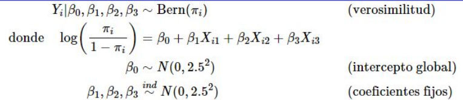
Las variables en este modelo son:
- Y_i: Es la variable de interes, es el exito en la compra, indica si el cliente i concretó la adquisición del activo inmobiliario (1) o no (0).
- X_i1: Uso de servicios premium, es una variable binaria que indica si el cliente contrató servicios de valor añadido (premium) durante la negociación.
- X_i2: Es el ciclo del mercado, representa la época del año en la que se inició la interacción comercial (Primavera, Otoño, Verano, Invierno), capturando las tendencias cíclicas del sector.
- X_i3: Es la nueva variable antiguedad_años, es una variable cuantitativa que mide los años transcurridos desde que la propiedad entró por primera vez al mercado hasta la interacción actual del cliente.
El modelo especificado con el codigo es
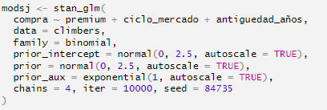
Modelo 2: Partial pooling por campaña
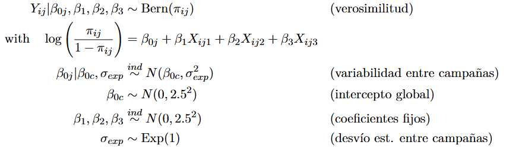
Jerarquía por campaña j
Las variables en este modelo son:
- Y_i,j: Éxito (Compra) del cliente i en la campaña j.
- X_i,j1: Uso de servicios premium.
- X_i,j2: Ciclo del mercado.
- X_i,j3: Años transcurridos desde que la propiedad entró por primera vez al mercado
El modelo especificado con el codigo es:
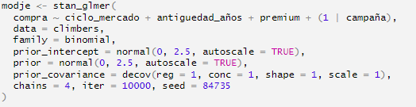
Modelo 3: Partial pooling por propiedad
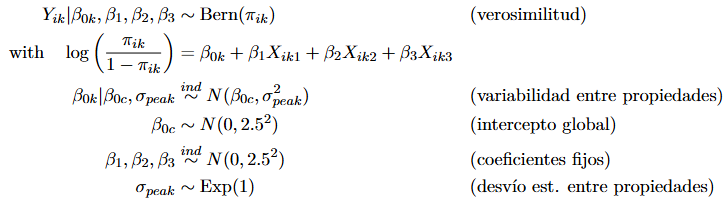
Jerarquía por propiedad k
Variables:
- Y_i,k: Éxito (compra) del cliente i en la propiedad k
- X_i,k1: Uso de servicios premium.
- X_i,k2: Ciclo del mercado.
- X_i,k3: Años transcurridos desde que la propiedad entró por primera vez al mercado
El modelo especificado con el codigo es:
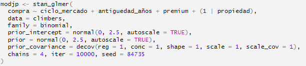
Modelo 4: Partial pooling por Ciclo del mercado
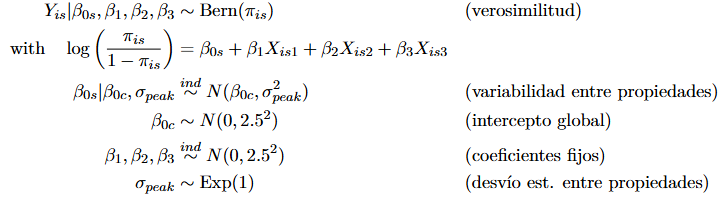
Jerarquía por Ciclo del mercado (s)
Variables:
- Y_i,k: Éxito (compra) del cliente i en el ciclo de mercado k
- X_i,k1: Uso de servicios premium.
- X_i,k2: Ciclo del mercado.
- X_i,k3: Años transcurridos desde que la propiedad entró por primera vez al mercado
El modelo especificado con el codigo es:
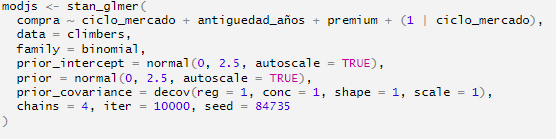
PPCHECK DE LOS MODELOS
Definimos una función auxiliar para calcular la tasa de éxito de cada modelo y del set de datos:
La línea vertical azul es la tasa de éxito de los datos reales. Lo que hace este pp_check es simular 100 posteriors y agruparlas en histogramas en vez de densidades. Se observan resultados muy similares para todos los modelos. No obstante, es levemente más preciso que todos el modelo jerárquico por campaña
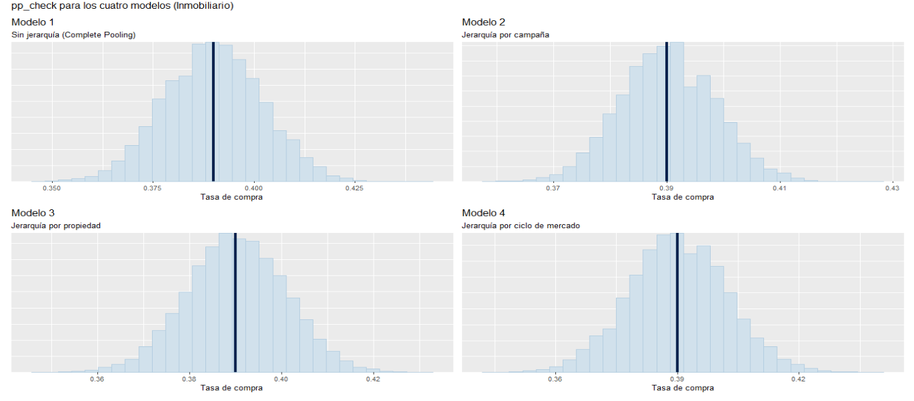
MCMC diagnostics del modelo 4: Traza
Se revisó la convergencia de todos los 3 modelos anteriores a este, la cual fue la adecuada. En el caso de jerarquía por ciclo de mercado, los resultados son levemente inestables. Se detectan ciertos problemas de convergencia en alguna de las cadenas. Esto ocurre dada la poca cantidad de datos para verano.
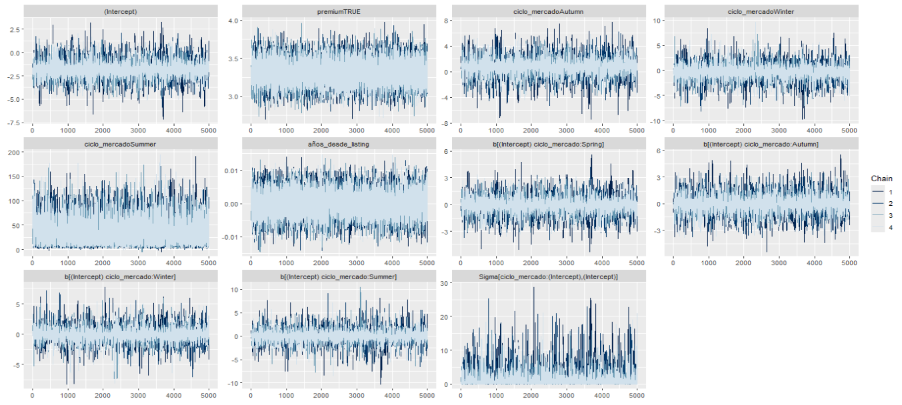
MCMC diagnostics del modelo 4: Densidades
Nuevamente, la convergencia de los otros tres modelos fue correcta, generando densidades adecuadas. En jerárquico por ciclo de mercado, los resultados de las densidades de los parámetros por cadena son consistentes entre las distintas cadenas.
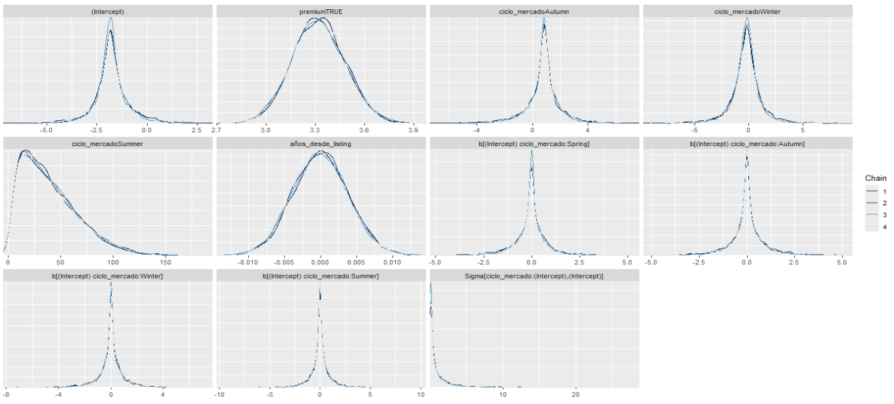
MCMC diagnostics del modelo 4: Correlación
Nuevamente se encuentra todo correcto para los otros tres modelos. En jerárquico por ciclo de mercado, los resultados de las correlaciones de los parámetros por cadena muestran que cierto nivel (bajo) de correlació
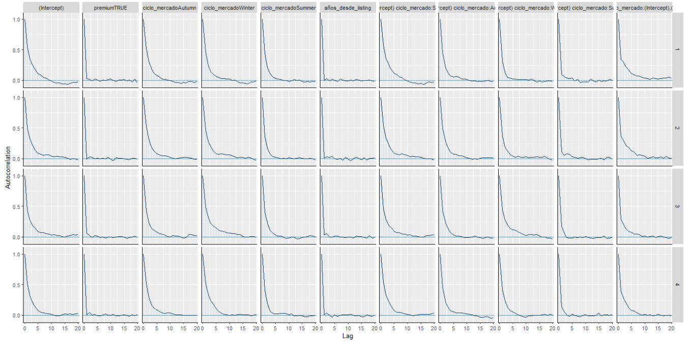
Comparación entre Modelos: Método LOO
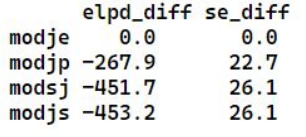
El método LOO sirve para comparar modelos según su capacidad predictiva usando Leave-One-Out Cross-Validation (LOO). El resultado muestra, para cada modelo, cuánto peor es respecto al mejor (el que tiene 0 en elpd_diff). Cuanto más negativo es, peor predice. Si la diferencia entre modelos supera aproximadamente 2 x se_diff se considera relevante.
El modelo modje (jerárquico por campaña) es claramente el mejor modelo, con una diferencia considerable respecto al resto. Esto tiene sentido: el éxito de un cliente (que compre la propiedad) depende en gran parte de la campaña a la que pertenece. En cambio, no depende de la propiedad que sube o la época del año en la que lo hace, donde esto ultimo seria el ciclo de mercado.
Análisis de los posteriors del modelo 2
Mediante la función tidy () se realizó el análisis de los posteriors. Para los IC se toma 95% de confianza
La variable antiguedad_años no tiene relevancia predictiva dado que está prácticamente centrada en cero. El resto de variables tienden a ser relevantes. El error estándar alto de la categoria verano en la variable ciclo de mercado se debe a los pocos datos.
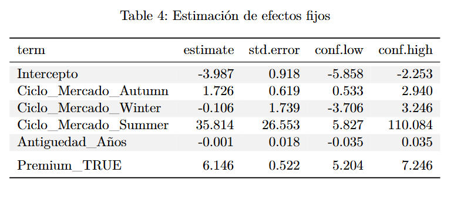
Efecto de premium en el posterior
Se graficó la probabilidad de éxito (compra de la propiedad) en función de si el individuo usa o no servicios premium
Cuando se usa servicios premium, la distribución se mueve hacia valores claramente más altos, mostrando que aumenta la probabilidad de éxito (compra de la propiedad). Cuando no se usa servicios premium, la probabilidad es muy baja (la densidad está concentrada cerca de 0). Se observa una cola de probabilidad inferior.
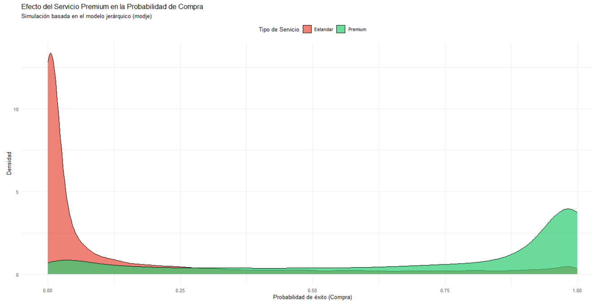
Caterpillar Plot basado en Log-Odds
Se toman 30 campañas al azar. Para cada una se calculan sus log-odds y se comparan con 0. Se toma como base 0 dado que 0 es el logaritmo del odd neutro (1).
Los valores a la derecha del 0 son aquellos en los que es más probable que hayan sido éxito (compra de la propiedad). Los valores a la izquierda son los que son más probable que haya sido fracasos (no compra de la propiedad).
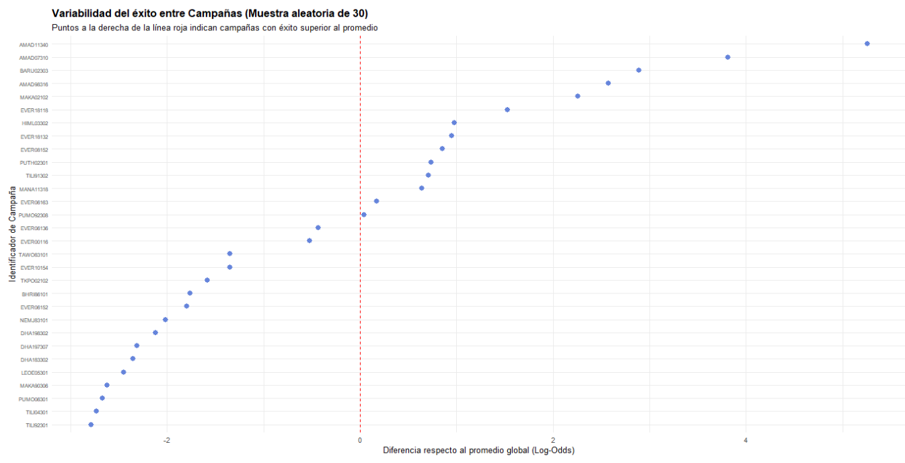
Tabla de conversión entre log-odds, odds y probabilidad
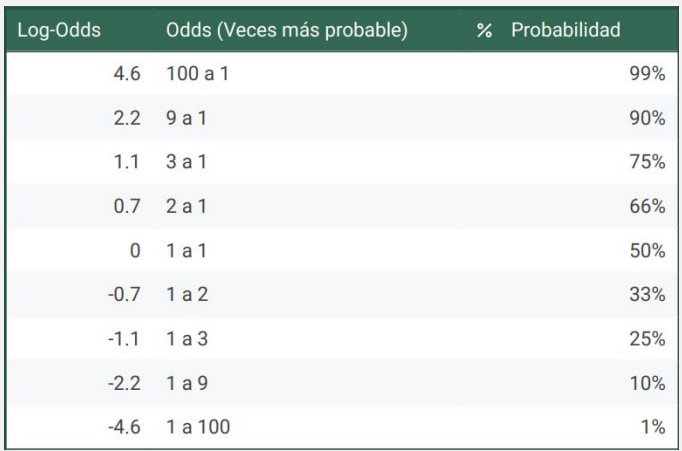
¿Cómo influye el tener servicios premium junto a antiguedad_años?
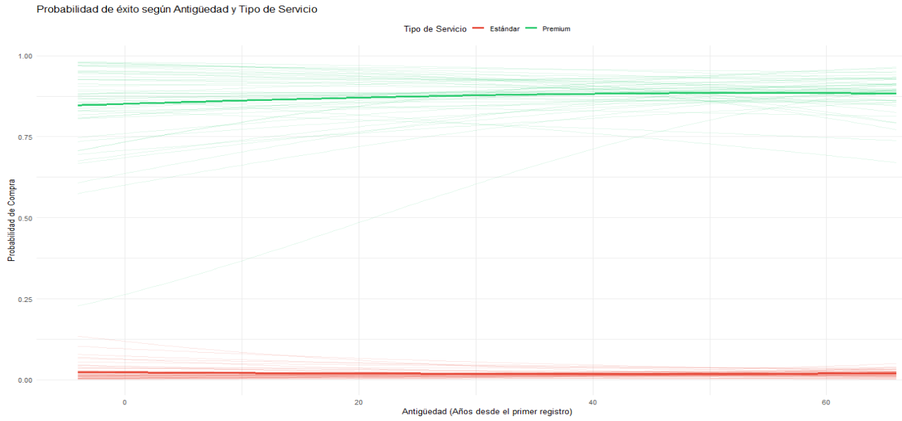
Claramente los años entre la campaña y los años que pasaron desde que la propiedad fue publica no influyen en la probabilidad de éxito (compra de la propiedad) ni en el uso o no de servicios premium. Esta nueva evidencia, sumada a la obtenida en el análisis de los posteriors, nos da a pensar que no es una variable relevante del modelo
¿Qué pasa si eliminamos la variable servicios premium?
Según el gráfico anterior, vimos que la variable servicios premium es sumamente relevante a la hora de modelar la probabilidad de éxito de compra de la propiedad por parte del cliente.
Vamos a comprobar la importancia de incluir servicios premium corriendo el modelo sin dicha variable
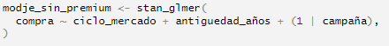
Mediante el método LOO comprobamos que este modelo es considerablemente peor que el modelo con servicios premium como variable, por lo que comprobamos que es necesario incluirla en el modelo.
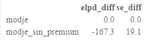
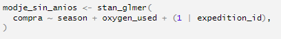
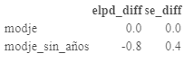
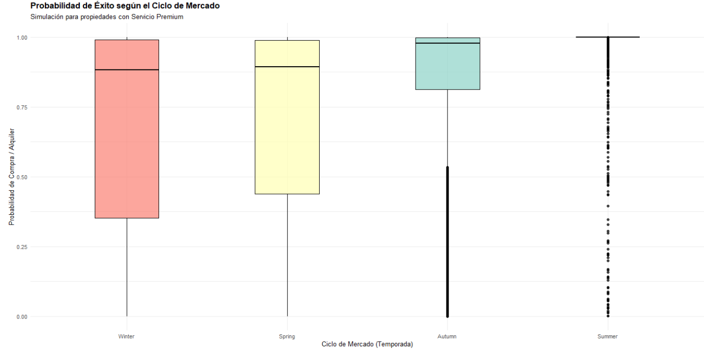
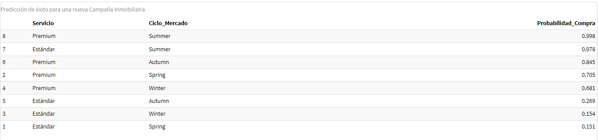
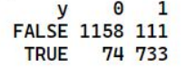
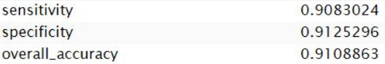
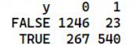
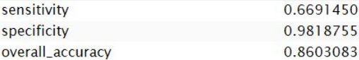
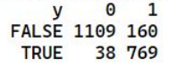
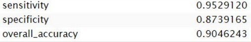